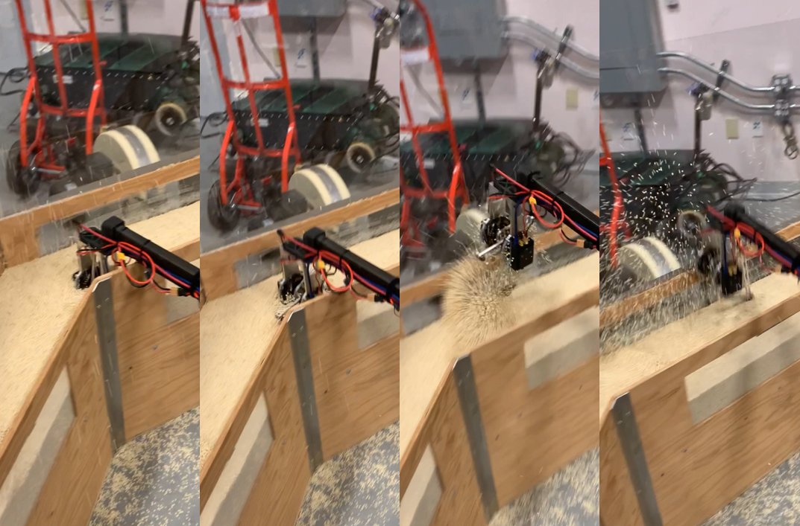

Public Projects
Below are a culmination of projects I was the lead developer on that can be spoken about publicly.
Tendon-Driven Robotic Hand
As the only dedicated software/controls engineer on this project, my work took a tendon-driven hand from a single dynamixel motor on a bench to a full 20 degree of freedom wrist and hand that leveraged custom actuators, sensors, and pcbs. Performed extensive hardware testing to develop coordinated control with ownership spanning drive-level firmware integration through high-level application architecture. Leveraged multiple control implementations blending kinematic control with dynamic characterization, another optimization-based and a final RL-based approach.
At the low level, several motor bus types were brought up behind one hardware abstraction layer, with drive provisioning that persists a full parameter set across power cycles and drive swaps, protective behavior for fault conditions the drive firmware does not enforce on its own, and always-on recording of faults and dropped packets so failures can be read back rather than reconstructed. On the real-time side, the control loop was moved onto real-time scheduling with tick-loss accounting and bounded fault recovery, the control tick was audited and proven to allocate no memory, command-path latency was cut substantially, control rate rose by more than an order of magnitude, and the physics engine was taken off the real-time path entirely.
Because the hand carries no joint sensors, an estimator was built to recover joint angles from motor measurements, replacing an earlier approach that diverged under load and adding a compliance compensation characterized on the real hand rather than assumed from the model. Two errors that had quietly invalidated every prior result were root-caused and corrected. Calibration was made reproducible through an operator-guided routine that serves as the single source of truth, autonomous routines that map each joint's travel limits with no operator present, and per-hand records scored against a range-of-motion report.
Both hardware revisions were modeled in simulation with a test proving the two stay in step, and a full sensing pipeline was built and validated ahead of the physical hardware it targets. Two teleoperation input modalities share a single retargeting layer that drives either the simulation or the real hand, and a browser control panel launches every run with live logs, an embedded 3D view, and reporting that turns a run into a readable result. At the architecture level, the work included putting the repository on continuous integration across both build configurations and both language suites, eliminating duplicate sources of truth in the hardware abstraction layer, and authoring the staged plans — reviewed and revised against merged work — that let the plant, controller, command source and motor bus vary independently.
Blind Legged Locomotion Improvements
This project was multifaceted and focused on improving the existing code structure as well as enhancing blind locomotion behaviors. The goal was to rely solely on proprioceptive sensing, without vision, to improve system stability. The experimental results shown in these videos demonstrate that the proposed approach and methodology improved performance when the system encountered both large and small unexpected curbs. The video with the large curb shows the performance before my changes (top) and after (bottom). The lower video again shows initial performance (left) and final performance (right).
Bipedal Force Control
This project develops a force-based double-support balancing controller that enables a bipedal robot to remain stable on uneven, compliant, and dynamically changing terrain using only minimal model information. The controller commands pelvis motion and ground reaction forces, which are converted into joint torques via a model-free PD controller, allowing the robot to balance robustly despite disturbances such as moving platforms, soft surfaces, and sudden drops. Experimental results demonstrate reliable balance performance on the Tallahassee Cassie platform, highlighting the potential for robust locomotion with reduced dependence on detailed robot dynamics models.
Convex Obstacle Avoidance
This project presents a real-time motion planner that enables robots to avoid multiple moving obstacles without requiring knowledge of their dynamics or intentions. The planner uses convex model-predictive control with a half-space relaxation to maintain convexity while approximating obstacle distances, allowing fast and reliable trajectory generation. Iterative refinement and soft penalty formulations improve avoidance performance, enabling agile maneuvers in dynamic environments. The method is validated in simulation with legged locomotion and in hardware with quadcopter drones, demonstrating successful real-time avoidance of fast and unpredictable obstacles.
Through Contact Motion Planning
This project presents a convex model-predictive motion planner for legged robots that generates real-time behaviors without predefined contact sequences or gait timing. The planner iteratively updates both the robot trajectory and predicted ground contacts, enabling dynamic through-contact motion while maintaining fast convex optimization. Simulations show that the robot can naturally achieve stable hopping, transition between behaviors, and reject disturbances, with gait characteristics emerging from the robot dynamics rather than manual tuning. These results demonstrate efficient real-time locomotion planning with minimal reliance on predefined contact patterns.
Legged Locomotion in Resistive Media

This project develops a real-time gait optimization method that enables legged robots to run efficiently through fluid-like terrains such as sand and other resistive media. By using a reduced-order dynamic model and smooth optimal control formulation, the approach computes energy-efficient running gaits online with fast nonlinear optimization. Simulations and hardware experiments on a monopod robot demonstrate effective locomotion through granular substrates, validating the method's ability to generate efficient gaits in challenging, deformable environments.